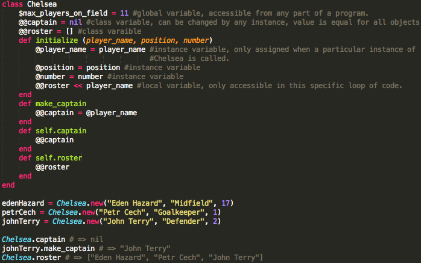
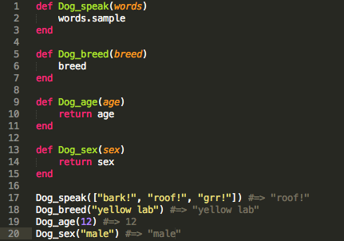
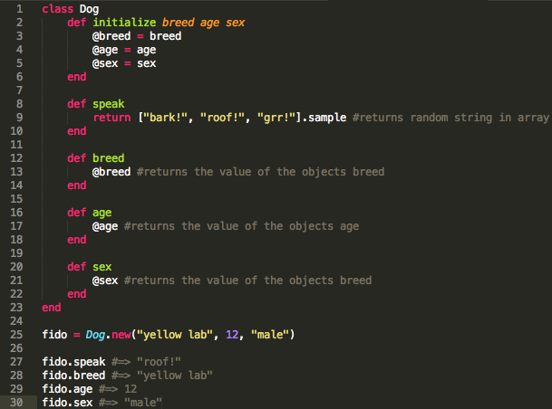

Hello DBC!
My name is Austin
Welcome to my website! My name is Austin, and over the course of the next several months I will be attending Dev Bootcamp, with the end goal of pursuing a career in web design. As a relative novice to the field, this will likely become more specific as I come to understand the industry.
Welcome to my blog!
April 13, 2014 | Inline vs. Block Elements
One time a p tag and a span tag were waiting to checkout at the grocery store. The p tag seemed to be in a giant hurry, and tried to cut the span tag. The span tag said: "No cutting, get inline!" to which the p tag responded: "stop it! You can't block me!"
Okay, painfully lame jokes aside, today's blog is all about the difference between inline and block elements. Some elements are inline - they naturaly integrate themselves with the elements around them, while others are block elements - they are separated out from the other items on the page nearby.
April 20, 2014 | The Rise of Javascript On the Internet
This week I'm looking deeper into why Javascript has rose to such prominence and importance in the web development world
1. It's efficient and powerful! It's not necessary for data to be pulled from a server for Javascript to be run, like standard HTML and CSS requires. Running this standard programming language is as simple as refreshing the web page you're on.
2. It's an object oriented language! Because of this, we developers can manipulate it to access the individual HTML objects (tags) on a page. As I continue to use javascript going forward, and having a decent amount of back-end programming experience, I can see how this could become incredibly powerful.
3. Javascript's popularity and ubiquity means that you're highly unlikely to run across browser that does not support its functionailty.
April 24, 2014 | The Map Method
A look into it's use and syntax!
The map method is, like most everything in Ruby, designed to simplify an otherwise lengthy program into a flexible and efficient tool. When used correctly and on the appropriate object class, the map method returns the result of performing a specified function across all items within a given object. The method is enherently non-destructive, meaning it does not alter the original object passed to it. However, its "bang method" twin ("map!") is destructive, meaning that not only does calling map on a object return the result of mapping the object, but it also reassigns the value of that object.
Syntax. Map Method syntax is really straightforward:
This is a basic structure of the map method. An array or hash object is passed to map, which applies the given function (in this case x-squared) upon each item stored within it. It then returns an array containing the newly-created values.
For example:
>> [1,2,3,4,5,6,7,8,9,10].map{|x| x**2}
=> [1,4,9,16,25,36,49,64,81,100]
May 2, 2014 | Classes and Variable Scope
An object-oriented hat trick!
As a still novice developer, one of the most confusing subjects I've encountered has been the idea of scope. Specifically, how scope differs for global, class, and instance variables can be incredibly confusing. A variable's scope determines where in a program that variable is accessible.
A fellow cohort mate of mine, Mr. Scott Jason, mentioned an interview where none other than Steve Jobs was asked to explain object-oriented programming in simple terms:
Objects are like people. They're living, breathing things that have knowledge inside them about how to do things and have memory inside them so they can remember things. And rather than interacting with them at a very low level, you interact with them at a very high level of abstraction, like we're doing right here."
Ruby is built as an object oriented language: it is set up in such a way so that classes and objects do much of the work. They contain values, perform functions, and return to you the value of these functions at the drop of a hat.
As a Ruby developer, it is therefore necessary to understand objects and their classes, and how they interact with certain variables. Below I provide examples of instance, class, and global variables in the context of a soccer team:
A soccer team is made up of 11 players. There are many attributes associated with a unique soccer team, and many associated specifically associated with the individual players. Furthermore, there are additional attributes associated with all soccer teams. Let's model this out in Ruby:
{kind=link}
Certain variables we want to remain constant across all instances of the Chelsea class, such as the team's roster, mascot, and captain. We wouldn't want John Terry's and Petr Cech's captain to be different! Other variables need to be specific to the object being called. We couldn't have number be a class variable, or else every time a new Chelsea player was created, all member's of the team would have their number switched to this new player's number. Lastly, some variables, like the number of players on the pitch, aren't local to a particular class (not just Chelsea are limited to 11 men on the field!)
May 7, 2014 | Functional vs Object-Oriented Programming
Comparing the paradigms through the Ruby perpective
This week's blog seeks to describe two of the most common frameworks through which developers have styled their code through research and examples using the context of Ruby.
Functional programming borrows much from its name. It seeks to solve problems and create solutions through the computation of mathematical functions. These functions are meant to create output while relying solely on the input passed into the functions themselves. Functional programming avoids involving state or changeable data, once again relying solely on inputs given to the function to create the output.

{kind=link}
Object-oriented (or Imperative) programming seeks describe the world as an environment containing objects, each of which have individual or shared characteristics. These characteristics collectively compose the objects mutable state. Output is then created by returning the required values of individual properties of

{kind=link}